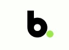

Sobre o Mini Mercado
Desde 2001 distribuindo frutas e verduras para restaurantes e mercados nas praias de Palhoça – SC, em março de 2014, Amarildo Alcibides da Silva recebeu o convite para arrendar o “Sacolão” da Praia da Pinheira, localizado em Palhoça. E convidou seus filhos Ramon Junckes da Silva e Ranieri Junckes da Silva para juntos aceitarem a proposta. Sendo assim, em 10 de março de 2014, a família assumiu o “Sacolão”.
Mais tarde, acreditando no potencial do negócio e o êxito obtido motivou Amarildo, Ramon e Ranieri a diversificar e ampliar os negócios. Assim, no início de 2018, decidiram colocar em prática uma ideia que visualizaram em São Paulo, a qual seria o conceito de Mini Mercado, com visual moderno, bons preços, bem localizado, atendimento de qualidade e com um mix menor de produtos, todavia eficiente. Foi assim que em 07 de setembro de 2018, inauguraram o primeiro Brisa Mini Mercado, em São José (SC), mais especificamente no bairro Kobrasol.
Em 2020, no mês de novembro, inauguramos nossa terceira loja, o Brisa de Campinas e em maio de 2021, o Brisa Itaguaçu, se tornando a nossa quarta loja.

- 